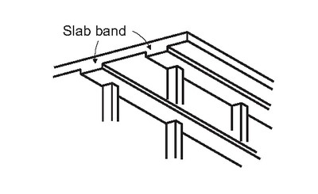

Cast-in-place beam-supported reinforced concrete floor [FC2]
Reinforced concrete slabs are supported by beams. This includes cast-in-place slabs with beams on all sides, waffle slabs with beams, slab band system (common in Canada), one-way joist system (common in North America), and clay tile coffered reinforced concrete slabs.

Reinforced concrete slab supported by beams, parking garage, Canada (S. Brzev)

Slab band floor system consisting of columns supported by wide beams and slabs is common in Western Canada (S. Brzev and J. Pao, Reinforced Concrete Design: A Practical Approach, Pearson Learning Solutions, 2013)

Reinforced concrete slab band floor system in a parking garage, Canada (S. Brzev)

Reinforced concrete slab on beams in a parking garage, Canada (S. Brzev)

Reinforced concrete waffle slab with beams, USA (S. Brzev)